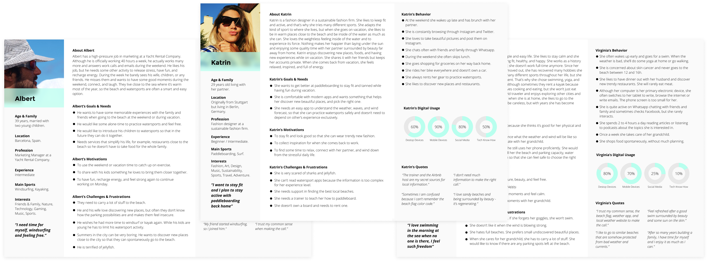

Shore
Android native app water sports case study
In 2020, while studying UX Design at CareerFoundry, I chose to tackle this problem: to create an app with
beautifully displayed and easy to understand wind, wave and weather reports, forecasts, and
statisticsfor watersports practitioners.
During the process, I discovered a market gap. There were no apps targeted to non-professional watersports
practitioners, representing 95% of the surveyed users. Additionally, I unveiled their common fear of sharks and
jellyfish. I decided to push the app towards these two discoveries.
The result is a proposition for a community-driven app with beautifully crafted UI.
Check out the resulting prototype here and dive deep into the process further down the page.
The App
This app allows the user to pick the right beaches by easily understanding weather, wind, and wave information. It also helps users stay and feel more secure in the water with shark and jellyfish spotting reports, and discover new locations and services to practice watersports.
Project Summary
The goal was to create an app with beautifully displayed and easy to understand visual language for watersport aficionados, as well as to explore the full range of available UX methods while doing so. This was part of the Careerfoundry intensive course on UX design that I completed between March and August 2020.
My Role
UX/UI Designer
Tasks: Concept Development, Research, Wireframing, Prototyping, Interaction Design, Illustration, Visual Design.
Tools
Figma
Keynote
Usability Hub
Optimalsort
Photoshop
Pen & Paper
Post-its
Whiteboard
Google Forms
Google Drive
Google Docs
Google Sheets
Grammarly
Hemingway app
Adobe Premier
The Challenge
How can I help beach-goers and watersports aficionados…
- 01
-
Easily understand weather, wind, wave information?
- 02
-
Pick the right beach tailored to their needs?
- 03
-
Feel safe when going into the water?
The Process
Through the project, I implemented the Design Thinking process.
01 Understand
In this first phase, I dug deep into the watersports world. I analyzed the competitors and I tried to understand what was motivating the watersports aficionados to use those apps and platforms. I reached out to some friends and acquaintances, who gave me more information about the watersports world. This helped me understand better the market and how the watersports world works.
Competitor Analysis
I conducted a competitor analysis to understand how other apps and websites in the watersports market work and what users valued the most. Where the users needs met? I discovered that users’ needs were not met since all apps were specialized in particular sports and most of them are not particularly well-executed. I also found out that there were many different business models and no standardized system to display wind, wave, and weather information. Yet, they were all very complex and difficult to understand. This analysis included competitors’ profile, marketing, and business strategy, SWOT Profile, UX/UI, content, design, and performance quality. Based on the analysis, I drew up several core features that defined Shore’s MVP.
Business Goals
An app that enables users to find tailored beaches to their needs, see and report dangerous water conditions.
Function Overview
– Easy to understand forecasts.
– Search for nearby locations & activities.
– Reporting dangerous water conditions.
Target Market
Watersports aficionados level beginner and intermediate, ages 16-65, and mobile phone proficient.
Opportunity
An aesthetic and easy to read and understand app for beginner and intermediate level watersports aficionados.
02 Observe
I surveyed 130 potential users combined with 5 interviews from my personal network. I aimed to collect both quantitative and qualitative data to validate/invalidate Shore’s provisional core features. I also wanted to discover which data was truly useful to my target users to practice watersports and go to the beach.
User Survey
Using Google Forms and a bilingual survey (Spanish, English), I found out that most users have a beginner or intermediate level and that they don’t need a lot of information to make the call. Besides, as I had already hypothesized, the fluidity between beach-goers and watersports aficionados was very high. Additionally, I discovered that over 90% of the users had extreme jellyfish and sharks fear, and that would wish to be warned about sightings and would participate in warning others.
Check the Survey!Goal #1: Define Target Audience
Find out if the assumption that a segment of the population with a beginner or intermediate level needs a simple, accessible, and reliable solution to practice watersports, is true.
Goal #2: Determine Features
To know what information and features are truly useful for our target user to practice watersports.

With this information I concluded the following:
- Professional watersports practitioners have specific apps for each sport, with complicated data. But there is a huge gap in the market for regular people who just want to practice a fun activity in the water while at the beach.
- As I had already hypothesized, the fluidity between beach-goers and watersports aficionados was very high. Thus, the app had to take a less professional direction and aim at the general public.
- A key feature of the app would be to add jellyfish and sharks spotting reports. I asked myself, would they like to collaborate in warning others?
- It is not necessary to show very complicated weather, wind, and wave data for users to make the call.
Survey Key Findings
Most users...
- Practiced watersports at least twice a year.
- Have a beginner or intermediate level.
- Don’t need a lot of information to make the call.
- Want to know about nearby services and locations.
- Are terrified of jellyfish and sharks.
- Take the decision to practice watersports spontaneously.
User Interview & Analyzing the Data
Having run a successful survey previously smoothed the path for better interviews. I used the interviews to dig deeper
into the feelings and emotions of the users, understand better the lifestyle of people who practiced watersports and
unveil potential business possibilities.
During these interviews, I confirmed the will of users to collaborate in warning others. Another key aspect was to
understand the feeling the app would have to communicate. Watersports are for many users a fun but particularly calming
and fulfilling experience. Many people want to be in touch with nature and enjoy the feeling of lightness and serenity
inside the water. This helped me to start defining the tone, and emotions to communicate through the UI.
I carefully analyzed all the data by creating Empathy Maps and Affinity Mapping. I divided the information in “App
Features” and for each of them wrote down the findings, insights, and possible solutions.
At this point, I took two very important decisions:
- I decided to name the app Shore because it was not anymore only about the water, but also the beach.
- It was not going to be a responsive web app, but a native app and a responsive website with different functionalities than the app.
These are the main reasons why I decided on a native app:
- The app would be used in-situ, and native apps offer a better experience on the phone.
- Despite progressive web apps being a quick, cheap, and more efficient solution, users still don’t know how to install a progressive web app and might feel confused about it. Being an app that needs to grow and create awareness, a native app serves a better purpose.
Shore’s Features
After the surveys and the interviews, I could define much better the core features of the app:
Easy
A smooth user experience that displays information in an aesthetic, simple, and accessible way, and drives users to discover new shores & watersport activities.
Efficient
Discovery and filtered search to tailor the user’s specific interests.
Helpful
Display on each location the nearby locations, food & drinks, watersports rentals, and watersport school services.
Reliable
Jellyfish spottings notifications and reporting features.
03 POV
Based on the results of the survey and interviews, I created 3 personas and 2 user journeys to guide design decisions, priorities, and develop empathy with potential users. While I was creating these documents, I realized that I needed some more information. It was tempting to imagine what the users would say, but I decided to contact the interviewees again and ask them a new round of questions regarding their behavior with digital products.
User Personas
User Journeys
Task Analysis & User Flows
04 Ideate
At this point, the concept was becoming clearer. However, I needed to embody the ideas in sketches to visualize the concepts and see if they made sense. By creating a Sitemap and running a Card Sorting Test, I could conceptualize better the Information Architecture of the app.
Card Sorting
This was one of the most exciting parts of the whole process. I prepared cards using the online software Optimalsort and had 8 people sort them. It was very interesting to see how despite people think in different ways, there are tendencies in concept grouping. After analyzing the results, had to change some of the previous navigation for the better.
Card Sorting Key Findings
- “Nearby locations” was not related to “Explore”.
- The feature to “Report a Jellyfish spotting” belongs to each location’s detailed view.
- “My Reviews” and “My Spotting Reports” belong together within the profile.
Sitemap
At this point, I adapted the sitemap according to my findings.
Paper Sketches
After card sorting, I had to sketch again the wireframes. I printed wireframe templates and started drawing each of the 3 core features: Find nearby beaches, Report Jellyfish and Sharks, Explore and discover an area.
05 Prototype
After many quick sketches, I was finally satisfied with the navigation. I moved on to wireframing the native app and a responsive desktop version on Figma. Designing with software instead of paper, helped me deal with smaller details and fitting problems, as well as finding the right transitions between pages. I decided to follow the Material Design guidelines, a grid system, and a mobile-first approach.
Mid-fidelity prototype
06 Test
After days of wireframing, I was very curious to see how testers would use the app and what I would find out. I consider this one of the most crucial moments of a UX Design process, and I think, that I should have conducted early-stage tests with low-fidelity prototypes. It would have saved me a lot of time and doubts to test more and earlier.
Usability Test
I conducted within 3 days, 6 moderated remote usability tests with potential users. The testers had similar
characteristics to the user personas.
Using Zoom, I asked the testers to follow specific tasks and describe to me what they were expecting, thinking, seeing,
and feeling. I found out that testers found it difficult to report jellyfish or shark spottings. Yet, most of the issues
were rather aesthetic or minor usability issues, and that the app was easy to understand and use.
After the sessions, I watched every test I had recorded and wrote down each expectation, action, feeling, and thought on
post-its. I created an affinity map and a rainbow spreadsheet.
Usability Test Key Findings
- Substitute the icons on the cards on the Home “Nearby” page by bullets following a streetlight color system. To support color blindness, the bullets would be accompanied by words.
- Add a FAB on each location’s detailed view to have better access to reporting spottings.
Preference Test
I conducted a first preference test that had too many variables in the design. Despite the variables overload, I
received interesting answers that helped me make good decisions. I noticed that this approach didn’t work and I decided
to run a new preference test with just one variable, to determine the best icon for the “Report a spotting” FAB.
Since the jellyfish and shark fear is such a sensitive topic, I wanted to avoid the feeling of alarm on every single
page. An alarm icon with a red button would have been more obvious, but I was convinced, that it would transport a
negative feeling to the whole app. My goal was that users felt safe, not alarmed! I offered testers 3 options that did
not transport the feeling of warning or fear. The “eye” icon won by 75% over the “bell” and the “plus” icon.
"It fits best the action as its an observation, an eye makes sense to me."
"Eye and “spotting” make sense."
"I understand “take care” or “look at…”."
"Because the eye icon to me means “need to report a sighting”."
07 Visual Design
At this point, I had to transport all my learnings into visual communication and ensure the consistency of the design. I enjoyed the challenges of creating illustrations, finding accessible colors that would make a beautiful color palette, developing a universally understood visual language system for the location and weather cards, and determining the right transitions between pages with animations.
Goal #1
Transmit the emotions that users have when at the beach and practicing watersports.
Goal #2
Find out an easy to read way top display big amounts of complex information.
Goal #3
Achieve a universally understood visual language system to explain weather, wind, and wave forecasts.
Goal #4
Ensure that other designers can follow the design style and use the elements.
Color Palette
I chose a modern but trustworthy color combination of turquoise and dark blue. The goal with these colors was to ensure
enough color contrast and transmit the right emotions.
Shore touches a sensitive subject related to fear – reporting spottings of jellyfish and sharks. I think it is important
to communicate the feelings of serenity and freshness with turquoise, and reliability with dark blue.
Regarding the Home Cards, I decided to use a universally understood color system: green, amber, and red.
Color Palette
Typeface
I chose to use only one font, a sans-serif that would be easy to read on digital displays.

Final Design
After many UI iterations, I reached this point. However, this is only the beginning of Shore. There are plenty more rounds to come after more usability test rounds.


Conclusion
This project allowed me to dive deep into UX Design and complement my previous product design experience. I learned extensively about how to design having the user in mind and it’s given me a different and valuable perspective. It was a long and challenging journey in which I appreciated seeing the project evolve with each new piece of data and enjoyed each one of the parts equally. But this is just the beginning of my life as an Experience Designer and still have a long way to go. I am ready to set out for the next journey!
What I learned
- The more time you invest in the first phases of the project, the easier designing the interface and the final product will be.
- Early testing is crucial to discovering important design flaws and save money and time further down the line.
- Create excellent pixel-perfect mid-fidelity prototypes, it will help to achieve a great UI.
- An accessible color palette is difficult to find, but not impossible.
- Don’t fall in love with your design, fall in love with the problem.
- Stay humble: listen, observe, and change the product to the users’ needs – the product is for them, not for you.
- Two sets of eyes are better than one – when in doubt, ask your colleagues!
Check out more Projects